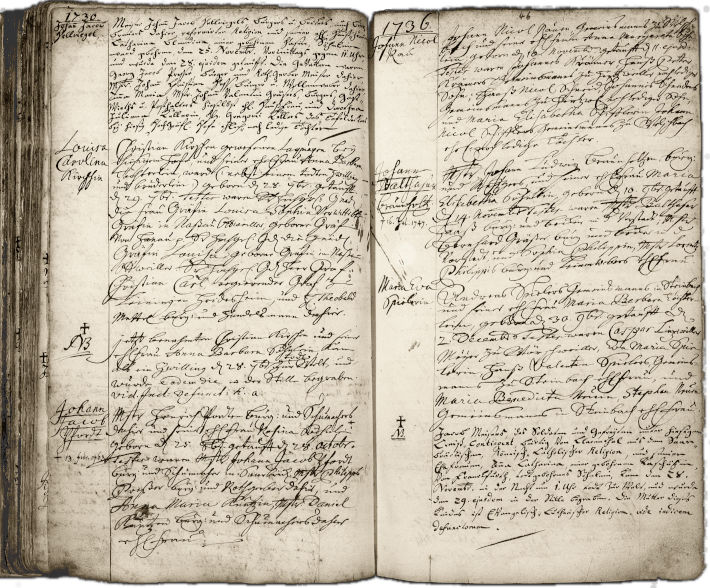
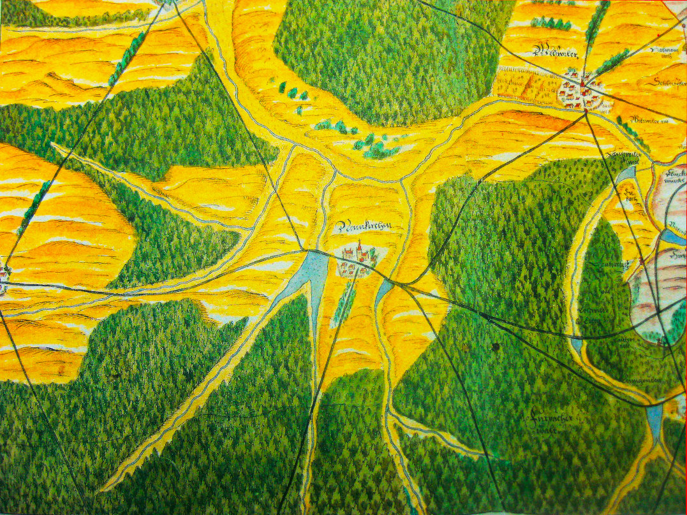
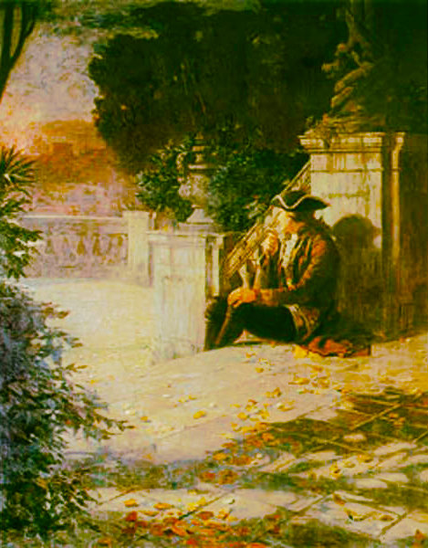

{kind=link}
Die Familie Schleßmann Teil 2
Der Umzug
nach Neunkirchen
Die Geschichte der Familie Schleßmann im Saarland beginnt mit Johann Christoph Schleßmann, geboren im November 1721 in Werben. Christoph verlor seine Mutter, als er 12 Jahre alt war; sein Vater starb 1737. Wir wissen nicht, wer sich danach um ihn kümmerte und wo er seine Ausbildung zum Schreiner absolvierte, denn er war später ein Schreinermeister. Offenbar hielt ihn nichts mehr in seiner Heimatstadt und er suchte sein Glück in der Fremde.
Johann Christoph Schleßmann
und Louisa Caroline Kirsch
Johann Christoph kam um das Jahr 1756 in der Saarregion an. In der Familienchronik von Christian Schleßmann wird erwähnt, dass er davor zunächst einige Zeit in einem Hotel in Holland arbeitete. Das beliebteste Fortbewegungsmittel in jener Zeit war die Postkutsche. Postkutschen war äusserst unbequem. Sie waren nicht gefedert, und die oft eng zusammengequetschten Reisenden saßen auf harten Holzbänken.
Bei seiner Eheschliessung in Neunkirchen war Johann Christoph bereits 36 Jahre alt. Seine Frau Louisa Caroline Kirsch (1736-1810) war die älteste Tochter von des Schreiners Christian Kirsch (1679-1760) und dessen Ehefrau Anna Barbara Schmidt (1708–1752), die beide in den Diensten der Herrschaft Ottweiler standen und im Ottweiler Schloß wohnten.
Die Eltern von Louisa Caroline Kirsch: Johann Christian Kirsch und Anna Barbara Schmidt

Das Ottweiler Schloss
Zeichnung von Heinrich Höer, 1617
Anna Barbara Schmidt (1708–1752), Louisas Mutter, war die Kammerdienerin von Gräfin Louise Sophie von Hanau-Lichtenberg und Nassau-Ottweiler (1662-1751). Barbara Schmidts Vater, Johann Nicolaus Schmidt, war Hochgräflich-Nassauischer Förster am alten Schloss in Neunkirchen.
Anna Barbara und Johann Christian Kirsch verlobten sich am 27. Dezember 1735 und heirateten am 17. Januar 1736.

1636 Verlobung
Im Heiratseintrag heisst es dann: "ANNO MDCCXXXVI. Christian Kirschen, dermahliger Laquay bey der Hochgebohrnen Gräfin Francisca Albertina zu Hanau, weyland Martin Kirschen gewesenen Einwohners und Gärtners zu Beütersitz Chur-Sächsischer Jurisdiction hinterlassener ehl. Sohn, des Schneider-Handwercks, wurde, nach dreymahliger Proclamation, den 17. Januar ehlich copulirt, mit Anna Barbara Schmidin, bey der Hochgebohrnen Gräfin Luisa zu Nassau in Diensten, weyl. Johann Nicolaus Schmidts, gewesenen Einwohners und Herrschaftl. Försters zu Neunkirchen hinterlassener ehlichen Tochter."
Das Paar hatte fünf Kinder, die alle in Ottweiler geboren wurden. Die Familie zog aber irgendwann nach Neunkirchen.
» Johann Christian Kirsch (1679–1760)
heiratete Anna Barbara Schmidt (1708–1752) in Ottweiler 17.01.1736
heiratete Anna Barbara Schmidt (1708–1752) in Ottweiler 17.01.1736
und sie hatten die folgenden Kinder::
| Louisa Caroline Kirsch | 28.09.1736 – *Ottweiler |
23.03.1810 †Neunkirchen |
verh. Johann Christoph Schlessmann in Neunkirchen 29.09.1757 | |
| Söhnchen Kirsch | 28.09.1736 – *Ottweiler |
28.09.1736 †Ottweiler |
(totgeborener Zwilling von Louisa Caroline) | |
| Dorothea Charlotta Kirsch | 04.06.1740 – *Ottweiler |
04.07.1742 †Ottweiler |
(zwei Jahre alt) | |
| Wilhelm Friedrich Christian Kirsch | 11.07.1742 – *Ottweiler |
unbekannt †unbekannt |
Status unbekannt | |
| Alexandrina Carolina Luisa Kirsch | 06.12.1745 – *Ottweiler |
11.06.1815 †Neunkirchen |
verh. Georg Philipp Anschütz in Neunkirchen 11.06.1765 |
Bei den Taufen der Kirsch-Kinder versammelten sich stets etliche adelige Taufzeugen, die teilweise von weit her anreisten und die Namensgeber der Kinder waren. Bei der Geburt des Söhnchens Wilhelm Friedrich Christian im Jahre 1742 war der hauptsächliche Taufzeuge sogar der regierende Fürst Wilhelm Heinrich II von Nassau-Saarbrücken (1718-1768).

1736 Taufe Louisa Caroline Kirsch
im Kirchenbuch Ottweiler
(auf der linken Seite, zweiter Eintrag)
{kind=link}
im Kirchenbuch Ottweiler
(auf der linken Seite, zweiter Eintrag)
Louisa
Caroline
Kirsch
Caroline
Kirsch
Christian Kirsch gewesenen Laquayen bey
hiesigem Hofe, und seiner ehel. Frau Anna Barbara
Töchterlein, ward (: nebst einem todten Zwilling
und Brüderlein :) geboren den 28 Sept. getaufft
den 29 Sept. Tester waren Sr hochgeborene Gnad
die Frau Gräfin Louisa Sophia Verwittibte
Gräfin in Naßau Ottweiler, geborene Gräfin
Von Hanau. Sr hochgrl. Gch die Gnäde :
Gräfin Louisa geborene Gräfin in Naßau-
Ottweiler. Sr hochgeb. Gch Herr Graf
Christian Carl, regierender Graf zu
Leiningen Heidesheim, und H. Theobald
Mettel brrg und Handelsmann dahier.
hiesigem Hofe, und seiner ehel. Frau Anna Barbara
Töchterlein, ward (: nebst einem todten Zwilling
und Brüderlein :) geboren den 28 Sept. getaufft
den 29 Sept. Tester waren Sr hochgeborene Gnad
die Frau Gräfin Louisa Sophia Verwittibte
Gräfin in Naßau Ottweiler, geborene Gräfin
Von Hanau. Sr hochgrl. Gch die Gnäde :
Gräfin Louisa geborene Gräfin in Naßau-
Ottweiler. Sr hochgeb. Gch Herr Graf
Christian Carl, regierender Graf zu
Leiningen Heidesheim, und H. Theobald
Mettel brrg und Handelsmann dahier.
Unsere Vorfahrin Louisa Kirsch wurde am 29. September 1736 in Ottweiler geboren. Sie ist benannt nach ihrer Taufzeugin Gräfin Louise.
Der letztgenannte Taufzeuge, Theobald Mettel, war Perückenmacher in Ottweiler. Seine Tochter Sophia Maria Mettel war die erste Frau unseres Vorfahren Georg Christoph Lichtenberger (1722–1773), des Vaters von Philippine Lichtenberger (Link).
Mit 16 Jahren verlor Louise ihre Mutter Anna Barbara, die am 26. Mai 1752 in Neunkirchen starb, ein Jahr nach dem Tod ihrer Arbeitgeberin Gräfin Louisa. Das Ottweiler Schloss wurde unmittelbar nach dem Tod der Gräfin abgerissen.
Anna Barbaras Sterbeeintrag lautet:
"Frau Anna Barbara Kirschin. H. Christian Kirschen, gewesenen Kammer Laquayen bey der gnädigen Graefvin Louisa sel. Andenkens zu Ottweyler, ehel. Hauß Frau, starb plötzlich, da sie von einem Landstreicher eine Purgierung gekauft und solche eingenommen, welche allzustark geweßen; so daß sie in zwey mahl 24. Stunden den Geist mußte darüberauf geben, welches geschehen den 26ten May und wurde darauf den 28ten ejusdem auf das Fest Trini. beerdiget, alt 45 Jahr 3 Wochen u. etl. Tag"
Am 22. Mai 1760 starb auch Louisas Vater:
"1760 ... Joh. Christian Kirsch. Ein alter Greiß, welchen der Schlag vor etl. Jahren in der Wieß zu Wiebelskirchen gerühret, welche er im FrühJahr butzen wollen, und die gantze Nacht durch in der Wieße in groser Kält liegen blieben biß des andern Tages, da man ihn gesucht und ganz elendig gefunden starb endlich den 22ten May nachdeme er etl. Jahre, nachdeme Ihn der Schlag gerühret, ganz kindisch geweßen, und ward den 24ten ejusdem beerdiget. Alt 79 Jahr 1. Monath und 8 Tag. "

{kind=link}
Neunkirchen um 1564
Um die Mitte des 18. Jahrhunderts war die Gemeinde Neunkirchen noch sehr klein. Sie bestand aus den drei Dörfern Neunkirchen, Wellesweiler und Spiesen. In der „Tabell der Meyerei Neunkirchen" von 1741 ist zu lesen, dass es damals insgesamt 69 Haushalte gab, also etwa 600 Bewohner, wenn man Ehefrauen, Kinder und Bedienstete hinzuzählt. Nur ein Bewohner war wohlhabend, der Rest arm. "Die Hauptnahrung bestehet in der Viehzucht und schlechtem Ackerbau“ heisst es.
1764 war die Einwohnerzahl der Meierei - also der drei Dörfer - auf etwa 1250 Einwohner angewachsen. Man hatte einen protestantischen Geistlichen (das war unser Vorfahre Georg Christoph Lichtenberger) und alle möglichen Handwerker - inklusive drei Schreiner. Einer davon war Johann Christoph Schleßmann. Interessanterweise gab es 12 Gastwirte.
Christoph Schleßmann und Louisa Kirsch
Louisa heiratete 1757 den 15 Jahre älteren Johann Christoph Schleßmann. Der Heiratseintrag im Kirchenbuch lautet wie folgt:"Christoph Schleßmann von Werben aus der alten Mark Brandenburg gebürtig, ist am 29.9.1757 A.C. mit der von Ihm emprognierten Luise Karoline Kirschin, Christian Kirsch, Einwohners dahier ältesten Tochter in der Betstunde copulieret worden".
Louisa war also schwanger, als die beiden heirateten. Johann Christoph kann erst kurze Zeit zuvor in Neunkirchen angekommen sein, denn es wird in dem Eintrag weder sein Beruf noch ein Status als Bürger genannt. Dies änderte sich aber schnell: Innerhalb kürzester Zeit wurde er Hofschreinermeister für die Fürsten von Nassau-Saarbrücken und es gab Arbeit für ihn:
Der oben erwähnte regierende Fürst Wilhelm Heinrich von Nassau-Saarbrücken (1741 – 1768), der sich immer gerne in Ottweiler aufhielt, hatte das alte Schloss wegen Baufälligkeit abbrechen lassen (siehe oben) und beauftragte den berühmten Baumeister Friedrich Joachim Stengel mit dem Bau eines Stadthauses, dem "Witwenpalais". Der Bau war zwischen 1758 und 1760 abgeschlossen.
Zur gleichen Zeit liess Fürst Wilhelm in Neunkirchen ein repräsentives Schloss bauen, das so genannte Jägersberger Barockschlos, dessen Bau bereits 1753 begonnen hatte, das aber erst 1765 fertig gestellt wurde. Wahrscheinlich arbeitete unser Vorfahre Christoph bei beiden Projekten mit.

1770 besuchte Johann Wolfgang von Goethe das Schloss. Seine Beschreibung in "Dichtung und Wahrheit" gibt einen guten Eindruck von Neunkirchen in der Nacht:{kind=link}
Goethe auf der Terrasse des Schlosses zu Neunkirchen
Ich überließ meinen Freund einem glücklichen Schlafe und suchte das höher gelegene Jagdschloss. Es blickt weit über Berg und Wälder hin, deren Umrisse nur an dem heitern Nachthimmel zu erkennen, deren Seiten und Tiefen aber meinem Blick undurchdringlich waren. So leer als einsam stand das wohlerhaltene Gebäude; kein Kastelan, kein Jäger war zu finden. Ich saß vor den großen Glastüren auf den Stufen, die um die ganze Terrasse hergehn. Hier, mitten im Gebirg, über einer waldbewachsenen finsteren Erde, die gegen den heitern Horizont einer Sommernacht nur noch finsterer erschien, das brennende Sternengewölbe über mir, saß ich an der verlassenen Stätte lange mit mir selbst und glaubte niemals eine solche Einsamkeit empfunden zu haben.
» Johann Christoph Schlessmann (1721–unbekannt)
heiratete Louisa Caroline Kirsch (1736–1810) in Neunkirchen, Saarland, Germany, 29.09.1757
Johann Christoph und seine Frau Louisa hatten mindestens fünf Kinder, aber nur der Sohn Johann Peter erreichte das Erwachsenenalter. Die Kinder wurden in Neunkirchen geboren.
heiratete Louisa Caroline Kirsch (1736–1810) in Neunkirchen, Saarland, Germany, 29.09.1757
und sie hatten die folgenden Kinder::
| Heinrich Rudolph Schlessmann | ??.??.1758 – *unbekannt |
??.??.1765 †unbekannt |
Status unbekannt | |
| Catharina Louisa Schlessmann | ??.??.1761 – *unbekannt |
??.??.1765 †unbekannt |
Status unbekannt | |
| Johannetta Charlotta Schlessmann | ??.??.1764 – *unbekannt |
??.??.1764 †unbekannt |
Status unbekannt | |
| Johann Peter Schlessmann | 02.05.1765 – *Neunkirchen |
24.04.1829 †Neunkirchen |
verh. Jakobine Louise Philippine Lichtenberger in Neunkirchen 1791 | |
| Georg Christian Schlessmann | ??.??.1767 – *unbekannt |
??.??.1767 †unbekannt |
Status unbekannt |
Der einzige Sohn Peter heiratete 1791 die Pfarrerstocher Philippine Lichtenberger.
Weiterlesen
Über uns
Lorem ipsem dolor.Curabitur lobortis molestie tellus ac ultricies.